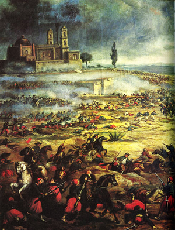
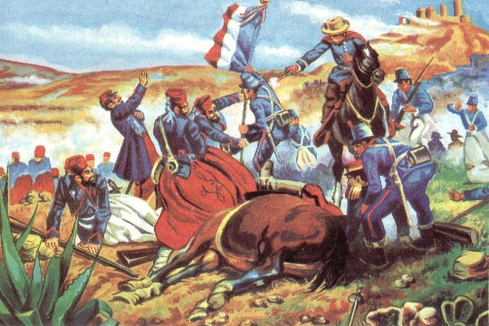
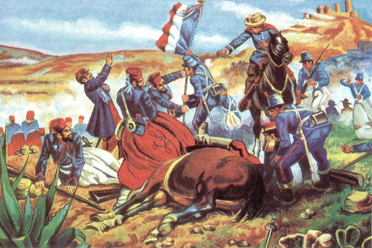
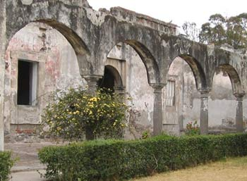
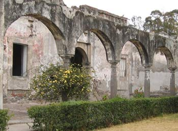

5 de mayo de 1862 "Batalla de Puebla"

Ahora restaurados, los fuertes de Loreto y Guadalupe pueden recorrerse en compañía de un guía, quien recreará con gran detalle la gloria militar. Ambos se encuentran dentro del Centro Cívico Cinco de Mayo, al noreste de la ciudad.
Este centro también alberga un planetario, el Museo de Arqueología Regional, el estadio olímpico de fútbol, un auditorio y una enorme extensión de áreas verdes.Dentro de este recinto también se asienta el museo interactivo Imagina, un lugar donde los niños pueden aprender, experimentar, explicar y sentir. Aquí, el aprendizaje se refuerza con juegos y actividades.
Economía, trabajo, educación y migración. La relación México-Estados Unidos no es un tema sencillo de abordar, de acuerdo a internacionalistas.
"Por un lado yo diría que nunca antes se había alcanzado la multiplicidad y la profundidad de contactos que hay entre funcionarios de ambos gobiernos, pero por el otro lado todavía prevalece, en buena medida la desconfianza; yo diría que se ha avanzado más en la relación entre México y EU a nivel de las ciudades fronterizas, de los estados, que tienen entre sí un nutrido intercambio, incluso de las comunidades de envío de migrantes y las comunidades de acogida, que entre las capitales de los dos países”, dijo Carlos Heredia, profesor investigador de la división de Estudios Internacionales del CIDE.
A decir de Carlos Heredia, existen pocos avances hacia una verdadera cooperación en el tema de seguridad.
"Hasta hoy tanto México como Estados Unidos nos hemos limitado a decirle al otro país lo que está haciendo mal o lo que está dejando de hacer. México le dice a Washington Tienes que evitar el flujo de armas de asalto y de dinero caliente, producto del crimen organizado de EU a México y EU le dice a México: Tienes que evitar el flujo de trabajadores indocumentados y de envíos de droga a territorio estadounidense."
El investigador destacó que, desde la crisis de 2008, mejoró sustancialmente el flujo de migrantes capacitados y documentados de México y hacia Estados Unidos.
"Ha aumentado de manera importante la migración regular o documentada, tanto de trabajadores temporales, como de profesionistas e incluso de hombres de negocios que, a raíz de la inseguridad pública en México, ha emigrado, no solo con su familia, sino también con su negocio”, añadió Carlos Heredia.
Estados Unidos ha promovido un acercamiento educativo con México y con toda América Latina.
Celebraciones en México
Celebraciones en Estados Unidos
Asegurado el paso de Acultzingo, el 2 de mayo de 1862 la columna principal del ejército expedicionario francés salió de San Agustín del Palmar, en Veracruz, para cruzar laSierra Madre Oriental y dirigirse hacia Puebla, paso obligado para llegar a la capital del país y que era además uno de los bastiones del Partido Conservador, donde esperaban ser recibidos "con una lluvia de rosas", como le aseguró Saligny a Napoleón III en una carta. El 3 de mayo por la noche, el general Zaragoza arribó a Puebla, dejando en su retaguardia una brigada de caballería para hostigar a los invasores. Los efectivos del Ejército de Oriente se organizaron por las calles desiertas de la ciudad, ya que la mayoría de la población era partidaria de la invasión.
Zaragoza estableció su cuartel a unos cuantos metros de la línea de batalla, donde estableció el plan para la defensa de la plaza (ver tabla superior), que consistió en concentrar los pertrechos en el sur y oriente de la ciudad, esperando evitar que los franceses alcanzaran al área urbana de Puebla.
El 4 de mayo, los exploradores mexicanos volvieron con noticias de que una columna de conservadores a caballo, al mando de Leonardo Márquez y José María Cobos, marchaba por la zona de Atlixco para unirse con las fuerzas de Lorencez en el ataque a Puebla. Zaragoza envió una brigada de 2000 hombres bajo el mando de Tomás O'Horán y Antonio Carbajal, con el fin de detenerlo, lo cual lograron. Aunque sus fuerzas habían disminuido, los mexicanos se prepararon para la defensa de Puebla. Contaban con dos baterías de artillería de batalla y dos de montaña, cubriendo los fuertes con 1200 hombres y formando a otros 3500 en cuatro columnas de infantería con una batería de batalla y una brigada de caballería por el lado del camino a Amozoc.
El ala derecha mexicana la cubrían las tropas de Oaxaca dirigidas por Porfirio Díaz. El centro de la línea lo ocuparon Felipe Berriózabal y Francisco Lamadrid con las tropas del Estado de México y San Luis Potosí. La izquierda se apoyó en el cerro de Acueyametepec ubicado en el norte de la ciudad y en cuya cumbre se ubicaban los Fuertes de Loreto y Guadalupe, con el general Miguel Negrete a la cabeza de la Segunda División de Infantería. La artillería sobrante la colocaron en los fortines y reductos dentro de Puebla, quedando al mando del general Santiago Tapia.
La línea de batalla mexicana formó un ángulo que se extendió desde Guadalupe hasta un sitio conocido como Plaza de Román, frente a las posiciones enemigas. Zaragoza dispuso que el general Lamadrid defendiera con las tropas potosinas y dos piezas de artillería el camino que conectaba a la ciudad con la garita de Amozoc. La derecha de la línea de batalla mexicana la cerró Porfirio Díaz con la División de Oaxaca, auxiliado por los escuadrones de Lanceros de Toluca y Oaxaca.
Los franceses continuaron su avance, colocando sus baterías frente a Guadalupe, al tiempo que devolvían el fuego mexicano proveniente de esa posición.

Los franceses, apoyados por el 1.er. y 2o. Regimientos de Infantería de Marina, se abalanzaron sobre el resto de la línea mexicana, siendo recibidos con la bayoneta. La columna francesa fue rechazada en Guadalupe y Loreto, siendo igualmente repelidos los ataques de otras columnas francesas desplegadas. En ese momento, el coronel mexicano José Rojo avisó a Antonio Álvarez que era tiempo de que la caballería mexicana entrara en acción para alcanzar una victoria completa. Ordenó a los Carabineros de Pachuca cargar sobre los restos de la columna, disparando sus carabinas y lanzando mandobles de sable sobre los franceses, siendo totalmente rechazados.
A las dos y media de la tarde, cuando se empezaba a perfilar una victoria para los mexicanos, Lorencez se dispuso a lanzar el último asalto, dirigiendo a los Cazadores de Vincennes y el Regimiento de Zuavos hacia Guadalupe, mientras ponía en marcha una segunda columna de ataque compuesta de los restos de los cuerpos de batalla —excepto el 99 de Línea, el cual quedó de reserva en el campamento francés—, para atacar por la derecha de la línea de batalla mexicana.
Ante esta situación, salieron a su encuentro los Zapadores de San Luis Potosí, al mando del general Lamadrid, librándose un terrible combate a la bayoneta. Una casa situada en la falda del cerro fue el objetivo. Los franceses la tomaron y se guarecieron en ella, siendo desalojados por los zapadores; la recobraron y de nuevo fueron expulsados por las tropas de Lamadrid. Un cabo mexicano de apellido Palomino se mezcló entre los zuavos y se batió con ellos cuerpo a cuerpo, posesionándose de su estandarte como botín de guerra al caer muerto el portador del mismo. Este momento significó un golpe anímico a favor de los defensores.
Ya entrada la tarde cayó un aguacero sobre el campo, lo cual dificultó el avance a las tropas francesas. Zaragoza dispuso que el Batallón Reforma de San Luis Potosí saliera en auxilio de los fuertes. En Loreto había un cañón de 68 libras que causaba enormes estragos en las filas francesas. Los zuavos hicieron una carga de infantería desesperada para apoderarse de esa pieza. El artillero mexicano, sorprendido por la rapidez de los franceses, tenía en sus manos la bala de cañón que no alcanzó a colocar en la boca de fuego. Un zuavo apareció frente a él y tras éste el resto del cuerpo que, una vez apoderados de ese fortín, levantarían la moral francesa y podría perderse la victoria conseguida. El artillero arrojó la bala al soldado francés, que herido mortalmente por el golpe en la cabeza rodó al foso del parapeto. Luego de que este asalto fue rechazado, los franceses retrocedieron siendo perseguidos por el Batallón Reforma.
Mientras, cuando la segunda columna llegó al Fuerte de Guadalupe protegida por una línea de tiradores, Porfirio Díaz acudió en auxilio de los Rifleros de San Luis Potosí, que estaban a punto de ser rodeados. Movió en columna al Batallón Guerrero, a las órdenes del coronel Jiménez, y le ganó el terreno a los franceses. Para apoyar envió al resto de las tropas de Oaxaca, con los coroneles Espinoza y Loaeza a la cabeza, con lo que se logró expulsar al enemigo de las cercanías. El éxito alentó a Díaz, que destacó al Batallón Morelos con dos piezas de artillería a la izquierda, mientras por la derecha los Rifleros de San Luis Potosí se reponían de la pelea, antecedidos por una carga de los Lanceros de Oaxaca, trabándose un combate cuerpo a cuerpo que hizo retroceder a los atacantes.
En aquel momento, luego de ser repelidos por última vez, los efectivos franceses empezaron a huir, completamente dispersados. Se replegaron a la hacienda Los Álamos, para finalmente retirarse hacia Amozoc.
 

La importancia de este Fuerte como tal y como Museo en particular radica en que, como Fuerte, en sus alrededores y dentro del mismo se han desarrollado diversos acontecimientos históricos trascendentales para México, tanto del siglo XIX como del siglo XX, desde la independencia hasta la revolución, pasando por los enfrentamientos entre conservadores y liberales, antes y durante la Guerra de Reforma y la Intervención Francesa.
Historia del Museo
El Museo del Fuerte de Loreto tiene su origen en el Museo de Historia Guerrera, fundado en el año de 1936 por un grupo de ciudadanos poblanos preocupados por la conservación del patrimonio, encabezados por los señores Carlos y Ángel Paz y Puente, quedando este último como su responsable. En marzo de 1955 el gobierno del estado de Puebla se encarga de su administración y en el año de 1962 pasa a manos del INAH llamándose a partir de entonces Museo de la No Intervención, hasta este año de 2012 en que cambia de nombre.
La colección que actualmente se exhibe en el museo es básicamente la que los señores Paz y Puente recopilaron para crear el Museo de Historia Guerrera, enriquecida con algunas otras piezas de diferente origen. Otras piezas en exhibición son préstamos temporales de varios museos, entre ellos el Nacional de Historia, el Regional de Querétaro, el de Santa Mónica de Puebla, etc.
Descripción del inmueble
El Fuerte de Loreto tiene una extensión de cerca de mil quinientos metros cuadrados. Está conformado en su interior por un edificio dividido a su vez en tres partes: la capilla, la casa del capellán y el cuartel militar. Alrededor de este edificio se encuentra una explanada y rodeando a ésta se encuentra cuatro bastiones o baluartes de tipo circular. El Fuerte de Loreto a su vez está rodeado por un foso que lo circunda totalmente.
A lo largo de la exposición se encuentra retratos de héroes y hechos, planos, maniquíes con uniformes, alegorías de la soberanía nacional, armas y cañones, así como otros elementos representativos de la historia del lugar. Asimismo se exhiben tres vídeos con información complementaria.


El Fuerte de Guadalupe no fue una fortificación militar de grandes dimensiones ya que el terreno mismo donde se asentaba no se prestaba para ello. Tenía únicamente dos pequeños baluartes y un sólo rediente que cubría la entrada. Se tuvo que echar abajo la iglesia y se hicieron repuestos subterráneos de bóveda y un aljibe. Exceptuando un parapeto de no más de un metro de espesor que se construyó a la carrera el 5 de mayo, todas las construcciones en este fuerte fueron nuevas.
Se encontraba a una distancia de 760 m. del Fuerte Independencia, a 928 mts. Del Fuerte Loreto, a 2,024 mts. De la Garita “Veracruz” y a 2,216 mts. de la Catedral de la ciudad de Puebla.
Ubicado en el antiguo cerro de nombre prehispánico Acueyametepec, se encuentra el Fuerte de Guadalupe, formando parte como un atractivo más de la Unidad Cívica 5 de Mayo en Puebla. Su dirección actual es Calzada Ejército de Oriente s/n Unidad Cívica 5 de mayo y se encuentra abierto de martes a domingo de 9:00 a 17:45. Este inmueble es de suma importancia para la Historia de Puebla, ya que en ese lugar fue donde se peleó y se obtuvo la victoria de la batalla del 5 de Mayo en 1862 en contra del ejército francés.
Haciendo una revisión a la historia de este inmueble se conoce que con la llegada de los españoles al valle de Puebla y la posterior fundación de la ciudad,(en abril de 1531) se erigió una ermita de adobe y teja bajo la advocación de San Cristóbal en donde actualmente se ubica el Fuerte de Guadalupe.
En 1580 la ermita pasó a manos de los padres betlemitas quienes le anexaron un pequeño hospital, por lo tanto se empieza a conocer como el cerro de Belem porque la capilla estaba dedicada a la Señora de Belem.
A mediados del siglo XVIII un temporal que azotó a la ciudad destruyó la pequeña iglesia y posteriormente Luis Osorio solicitó su reconstruirla; se terminó en 1773 pero bajo la advocación de la Virgen de Guadalupe.
Con el paso del tiempo, se empezó a usar como polvorín y en tiempos independentistas sus muros fueron reforzados para resistir las fuerzas insurgentes.
En 1862 se construyó el Fuerte, se rodeó con un foso y el templo se reforzó más, para poder resistir la intervención francesa. Es conocido que México ganó la batalla del 5 de mayo en 1862, pero también debemos saber que en marzo de 1863 los franceses sitiaron la ciudad de Puebla iniciando lo que históricamente se conoce como el Segundo Imperio o el tiempo de Maximiliano de Habsburgo como emperador de México.
Con la batalla y el sitio de Puebla, el fuerte de Guadalupe quedo destrozado, la iglesia se perdió completamente y actualmente solo se conservan algunos muros, el foso y alguna pieza de artillería como muestra museográfica.
En 1930 el Fuerte de Guadalupe como el de Loreto fueron declarados “propiedad de la nación al servicio del pueblo” y actualmente es un lugar para visitar y descubrir la Historia de Puebla.
 

Del 7 de abril al 6 de mayo, la ciudad de Puebla se viste de gala con una serie de actividades para celebrar el 150 aniversario de la Batalla del 5 de Mayo. ¡Festeja este histórico suceso que marcó el rumbo de México!
Un total de 800 artistas provenientes de 20 distintos países se reunirán en el Festival Internacional 5 de Mayo para celebrar el 150 aniversario de este evento histórico que rememora la victoriosa batalla contra la invasión francesa en el estado de Puebla. Para ello, la “Ciudad de los ángeles” ha preparado una serie de conciertos y eventos culturales que serán posibles disfrutar a lo largo de 30 días.
Dentro de los conciertos programados destacan las presentaciones de Ensamble Mass, grupo de origen canadiense/estadounidense cuya versatilidad se caracteriza por la mezcla de disciplinas como la música, la danza y las artes visuales, un espectáculo que ha sorprendido a muchos espectadores alrededor del mundo.
También, contará con la presencia de DJ Panko, otro de los artistas internacionales que experimenta una variación de música electrónica con ritmos flamencos de su natal España.
Las agrupaciones nacionales no se quedan atrás. Entre ellas destacan Radaid, grupo jalisciense con más de diez años de trayectoria que utiliza instrumentos provenientes de India, China, Medio Oriente, África y México. Además, podrás gozar de la música de Moenia, la Sonora Santanera, Los de abajo, Nortec Collective, Lila Downs, así como la interpretación de la Orquesta de Cámara de Bellas Artes.
Entre los eventos culturales sobresale la participación de Virpi Pahkinen, finlandesa especializada en danza contemporánea; grupos de jazz como Calacas Jazz Band, Faralae, Noir Manouche, Dulce Resillas, Agustín Bernabl Trío, entre otros. También, durante este mes encontrarás clases magistrales, conferencias y talleres referentes a diversas disciplinas artísticas, realizados en emblemáticos escenarios como el Teatro de la Ciudad, el Teatro del CCU de la Benemérita Universidad de Puebla y el Zócalo.
¡No te pierdas la fiesta cultural más grande de la bella ciudad colonial de Puebla!
En México el acto histórico es recordado cada año, pero sin gran relevancia. En contraste, en Estados Unidos la celebración se ha vuelto cada vez más popular entre los latinos como en los propios estadounidenses.
En la Casa Blanca se realiza una espectacular fiesta, en el país hay desfiles, fiestas, picnics y celebraciones municipales; la celebración va en camino de ser más popular que el Día de San Patricio.
Al paso de los años, esta fecha se ha convertido en un día de orgullo étnico y de expresión comunitaria, convirtiéndose ya en una tradición estadounidense.
En la actualidad la fecha es un día del Orgullo Mexicano, una manifestación de identidad de los connacionales en el vecino país.
¿Por qué tomó relevancia esta fecha?
Una primer versión dice que la Batalla de Puebla en realidad logró posponer la intervención de las fuerzas francesas durante un año, lapso que permitió al gobierno de Benito Juárez medir sus fuerzas y fortalecer su resistencia; mientras que Estados Unidos se vio favorecido por esta hazaña mexicana, ya que evitó que los franceses hubieran encontrado un camino fácil para llegar a Norteamérica.
La historia relata que el gobierno francés quería frenar el crecimiento de Estados Unidos porque era una amenaza mundial; es por esta causa que el gobierno estadounidense se ha sumado a la celebración del 5 de mayo.
Una segunda versión apunta a la identidad de los migrantes, la Revolución Mexicana y los conflictos en el país envió casi medio millón de refugiados a territorio norteamericano quienes necesitaban expresar su patriotismo.
Para los mexicanos en Estados Unidos durante esos años, la Guerra Civil en Norteamérica y la Intervención Francesa en México fueron luchas paralelas en las que estaban en juego los ideales democráticos y antirracistas.
De acuerdo con el historiador Hayes Bautista, concluidos ambos conflictos, los veteranos de ambas guerras en el noreste de México y en California, hacían festejos cívicos para recordar el porqué de sus luchas provocando una integración de ambas culturas.
Con el pasó de los años y la llegada de más migrantes a tierras estadounidenses la celebración fue modificándose pero sumando gran convocatoria.
En octubre de 1861, Francia, Inglaterra y España suscribieron la Convención de Londres, en la cual se comprometieron a enviar contingentes militares a México para reclamar sus derechos como acreedores por una deuda que ascendía alrededor de 80 millones de pesos, aproximadamente eran 69 millones para los ingleses, 9 millones para los españoles y 2 millones para Francia.
Poco después de reunirse, los representantes de los tres países enviaron un ultimátum al gobierno mexicano en el que pedían el pago de sus deudas; de lo contrario, invadirían el país. Juárez, quien gobernaba a un país que apenas empezaba a levantarse de la postración económica, respondió con un exhorto a lograr un arreglo amistoso, y los invitó a conferenciar.
Acompañó ese mensaje con la derogación del decreto que suspendió los pagos. Al mismo tiempo, en vista de la posibilidad real de una invasión militar que buscara llegar hasta la Ciudad de México, ordenó el traslado de pertrechos y la fortificación de Puebla, así como crear una unidad, a la que se designó como Ejército de Oriente, que fue puesta bajo el mando del general José López Uraga. En vista del desempeño deficiente de este mando, fue destituido y en su lugar se designó a Zaragoza, quien dejó el Ministerio de Guerra y se dirigió a Puebla para organizar la oposición al avance francés con cerca de 10,000 hombres; cantidad mínima si se toma en cuenta el vasto territorio que debía cubrirse.
Inicio de la batalla de Puebla
Desarrollo de la batalla de Puebla